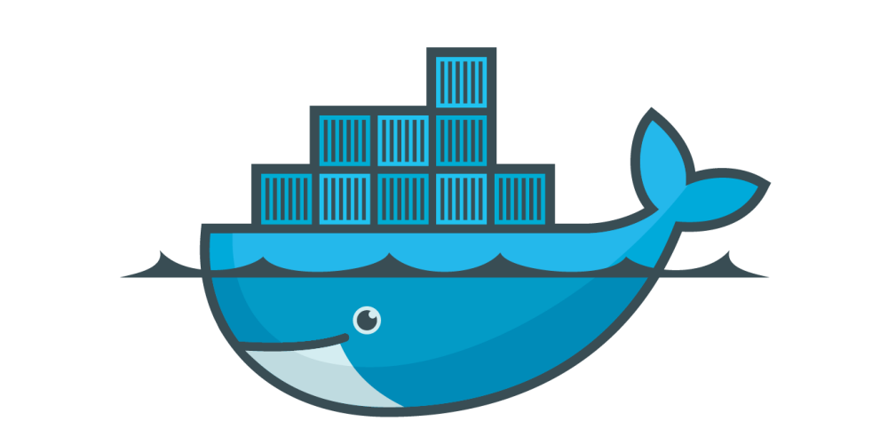

Containerization Applied
April 1st 2017Agenda
- Historia.
- ¿Qué es?
- ¿Para qué nos sirve?
- ¿Cómo puedo sacar provecho?
- Demo.
Historia
¿Cómo llegamos a la contenerización?
Servidores Físicos
- Alto costo.
- Personal dedicado.
- Mantenimiento.
- Tiempo de vida.
Virtualización
- Aprovechamos mejor el hardware existente.
- VirtualBox.
- VMware.
Automatización de IT y Devops
- Mejores herramientas para el manejo y automatización de software.
- Chef.
- Puppet.
- Ansible.
- Salt.
Contenerización
¿Qué es?
Permite virtualizar aplicaciones de software sin necesidad de tener máquinas virtuales completas.
Ventajas
- Los contenedores normalmente son más livianos.
- Nos permite correr aplicaciones completas sin instalar todas las dependencias en la máquina física.
- Fácil escalabilidad.
- Soporte en la nube (Amazon EC2 Container Service).
Docker
Docker Hub
Repositorio con gran cantidad de software contenerizado de fuentes oficiales, no oficiales, comunidades y privados.
DockerFile
Un archivo que contiene una "receta" de las cosas que debe llevar nuestro contenedor.
Docker Compose
Herramienta que nos permite "orquestar" y controlar uno o varios contenedores.
DEMO
¿Preguntas?
Containerization Applied
April 1st 2017